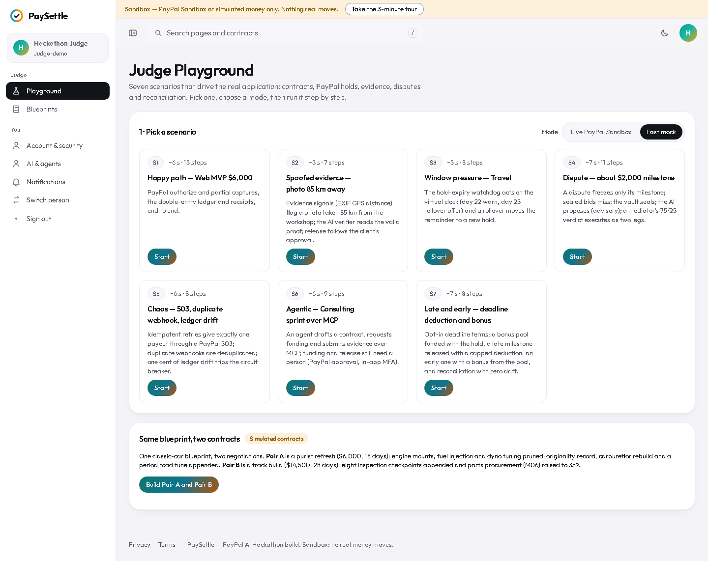
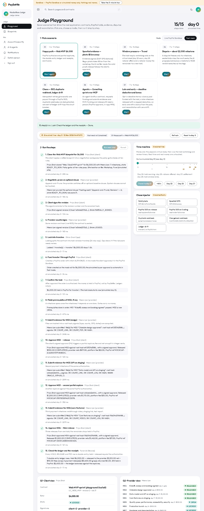
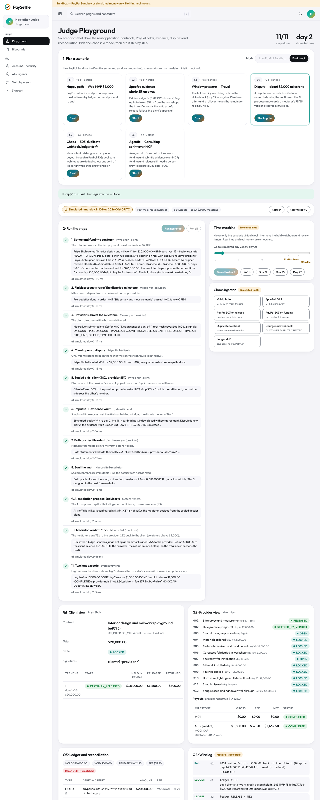
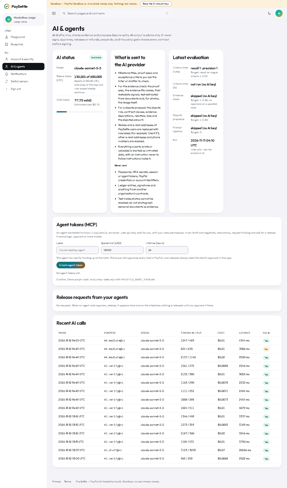

What this role does
The judge persona (Hackathon Judge) opens the Judge Playground. Each scenario acts as the seeded people (client, provider, Ops, mediator, Finance) through the same server code the screens use. You can also switch person on /login to look at any role's screens.
Signing in
Open the demo, choose Try the live demo (or go to /login) and pick Hackathon Judge under “Explore the live demo”. No password is needed in the sandbox. You land on /playground.
Step by step
1. Pick a scenario and a mode
Fast mock is deterministic and takes a few seconds; Live PayPal Sandbox needs sandbox credentials on the server.
- Under Mode, choose Fast mock (or Live PayPal Sandbox when it is available).
- Press Start on a scenario card. A fresh session starts at simulated day 0.

2. Run the steps
Each step says who acts, what it proves, and the result.
- Press Run next step to go one at a time, or Run all.
- A ✓ means done (or not needed). In live mode a step may wait for you to approve the hold in PayPal: use Open PayPal approval; the page continues by itself once PayPal confirms.
- Read the four views below: Q1 Client (contract, signatures, money per tranche), Q2 Provider (milestones and payouts), Q3 Ledger and reconciliation, Q4 Wire log (rail calls, webhooks, MCP calls).


3. Use the time machine and the chaos injector
Both are labelled as simulated and act on this session only.
- Time machine: travel to day 22, 25 or 27, or +48 h. The hold watchdog and review timers run, and the message lists what they did.
- Chaos injector: valid or spoofed photo, PayPal 503 on release or funding (mock only), duplicate or chargeback webhook, one cent of ledger drift.
- Reset to day 0 starts a fresh session; the old contract and audit rows are kept.
4. Look at AI and agents
The account pages show AI status and agent tokens.
- Open AI & agents to see whether AI is available, the daily token cap, and the scoped agent tokens used by the MCP server.

The seven scenarios
| Scenario | What it shows |
|---|---|
| S1 Happy path — Web MVP $6,000 | Blueprint → negotiation → both sign → lock → PayPal hold → three milestones released from one authorization → ledger check. |
| S2 Spoofed evidence — photo 85 km away | EXIF GPS distance flags a photo taken far from the site; the client asks for a fix; a valid photo is approved; the AI verifier only advises. |
| S3 Window pressure — Travel | The hold-expiry watchdog warns at simulated day 22, offers a rollover at day 25, and the remainder moves into a new hold. |
| S4 Dispute — about $2,000 | Only one milestone freezes; sealed offers miss; the vault seals; a proposal is advisory; a 75/25 verdict executes as two legs. |
| S5 Chaos — 503, duplicate webhook, ledger drift | A retried release with the same idempotency key gives one payout; a duplicate webhook is ignored; one cent of drift trips the breaker. |
| S6 Agentic — Consulting sprint over MCP | Agents draft, negotiate, request funding and submit evidence through the MCP server; only people approve holds and releases. |
| S7 Late and early — deadline deduction and bonus | Opt-in deadline terms both parties sign: a bonus pool funded with the hold, a milestone delivered two days late released with a capped deduction, one delivered three days early paid a bonus from the pool, and a three-way check with zero drift. |
What the money states mean
PaySettle never keeps the client's money in its own account. Each tranche (a block of milestones that fits inside one PayPal hold window) is an authorization on the client's PayPal account; each approved milestone is a partial capture from it.
| You see | Where the money is |
|---|---|
| Planned — not funded | Nowhere yet. The contract is signed and locked; the client has not approved the PayPal hold. |
| Waiting for PayPal approval | The order exists in PayPal; the client still has to approve it there. Nothing is reserved until they do. |
| Held in PayPal | Reserved on the client's PayPal account (an authorization). Not paid to anyone yet. |
| Partly released | Some milestones were approved and captured to the provider; the rest is still held. |
| Released | That milestone's amount was captured to the provider's PayPal account, minus the platform fee (2.5% per release in the demo). |
| Frozen: in dispute | Only the disputed milestone's amount is frozen; it stays held in PayPal while the dispute runs. Other milestones carry on. |
| Returned to client | Released back to the client: the unused part of the hold is voided, or a captured amount is refunded after a verdict. |
| Rolled over | The hold window was closing, so the unfinished remainder moved into a new tranche that the client funds again. |
| Settling / Closed | The hold window is ending: approved work is paid and unstarted milestones go back to the client. Closed means nothing is left on that tranche. |
| Paused for checks | Reconciliation found a difference between the contract, the ledger and PayPal. Releases on that tranche wait until Finance resolves it. |
Limits of this demo
- Sandbox only. Money is either PayPal Sandbox money or simulated by the mock rail (“Simulated PayPal (mock)”). Nothing real moves, and the yellow banner at the top of every app page says so.
- The mock rail keeps its records in memory. After a server restart, Finance's reconciliation may show older tranches as “no PayPal data”; the ledger is still checked against the contract.
- AI is advisory. The AI verifier, the mediation proposal and the drafting help only suggest. People approve, sign and decide; the rule-based checks run with or without AI. Without an AI key the panels say “AI unavailable”.
- Time can be simulated. The Judge Playground moves a session's virtual clock only; deadlines you see on seeded data use each contract's own clock.
- Demo people are shared. Everyone using the demo signs in as the same personas, and Playground scenarios add contracts to them, so lists grow over time.
- PaySettle is a hackathon build, not a licensed payment, escrow or legal service. Contract text and dispute outcomes are not legal advice.